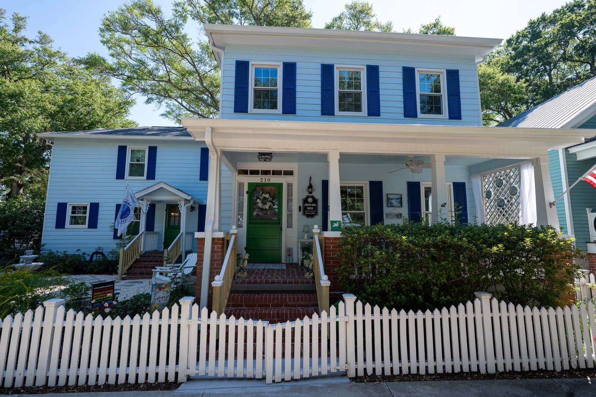
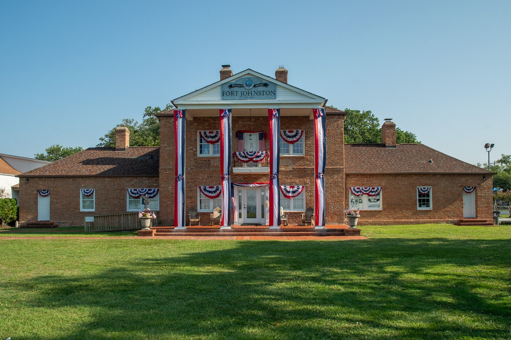

So much history in one coastal Carolina county…


Do you own a historic home in Brunswick County?
Requirements for a Historic House Plaque
1. The structure must have been built at least seventy-five years ago from the date of application.
2. Copies of deeds from courthouse from original to present if possible:
Copies of deeds back as far as possible to establish who owned the house originally, at least the earliest known owner. Be aware we DO NOT accept the date of construction from tax records. Download Research Instructions.
3. Non-member fee is $275, Member fee is $250. Pay Fee here.
4. Fill out the application form here.
PLEASE NOTE: All plaques remain the property of the Southport Historical Society and are to be displayed only in accordance with the guidelines set forth above.

